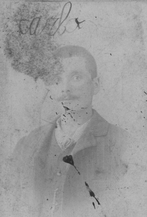
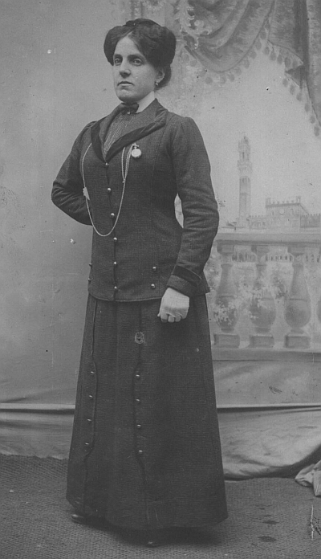
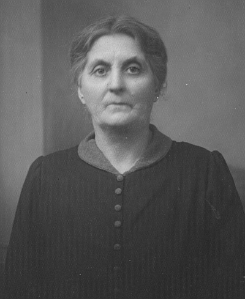
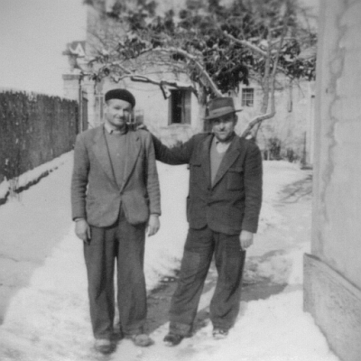

Quercegrossa (Ricordi e memorie)
CAPITOLO II - FAMIGLIE DEL '900
Indice dei Capitoli
Indice Famiglie del '900
BROGI DANTE (1924 - Residenti); commercianti; Quercegrossa; da Basciano.
Fu la risolutezza del sedicenne Dante che convinse il babbo Carlo a fare il gran passo e accollarsi nel 1922 l’oneroso e sconosciuto esercizio del commercio. Una breve marcia la loro, dalla Staggia di Basciano a Quercegrossa, ed era l’11 aprile 1924 quando i Brogi presero dimora nelle Case Ticci ed entrarono così a far parte del nostro popolo quando già da due anni avevano rilevato la bottega della "sora Emilia" e iniziato una nuova attività assai diversa da quelle praticate da Carlo e dalla moglie Zaira.

Nella foto: "Carlo Brogi, il babbo di Dante".
Contadino da sempre, il primo, e famiglia di mugnai da secoli, la seconda. Una nuova impresa quella della vendita al dettaglio che sapranno gestire con intelligenza, operosità e concretezza per trent'anni e alla quale abbineranno tante altre più o meno impegnative fatiche tra le quali la gestione della Colletteria postale. Quando i Brogi giunsero a Quercegrossa non erano dei perfetti sconosciuti, anzi da circa 150 anni vivevano in prossimità del nostro paese. Infatti, la storia della famiglia dal Settecento ad oggi si concentra su sette nomi: Macialla, Mulinuzzo, Rencine, Poggiolo, Poggiorlando, Staggia e Quercegrossa. Questi sono i luoghi dove hanno dimorato negli ultimi due secoli gli antenati diretti dei Brogi. Dagli stati d'anime della parrocchia di Basciano si rileva che essi giunsero a Macialla intorno al 1780 e non risultano anteriormente presenze di famiglie omonime. Erano quindici persone condotte da Giovanni del già Lorenzo. Questo binomio di successione Lorenzo/Giovanni si rinnoverà ancora per un paio di generazioni per interrompersi con Luigi il babbo di Carlo.
Intanto, nel 1781 è capoccio il detto Giovanni che guida una famiglia composta dai suoi fratelli e dai cugini, figli dello zio Pasquino, anch'egli defunto. Del primo nucleo fanno parte Giovanni (1753), l’unico ammogliato, con la consorte Rosa Guideri e i figli Teresa (1778) e Lorenzo (1780). Ci sono poi i suoi due fratelli Bartolomeo (1755) e Giuseppe (1757), figli della prima moglie di Lorenzo di nome Caterina, e tre fratellastri: Francesco (1764), Alessandro e Antonio nati da Lorenzo e M. Anna Frosali, detti di secondo letto. Osservando le date di nascita appare evidente che intorno al 1760 si è verificata la morte di Caterina alla quale Lorenzo ha rimediato subito risposandosi con M. Anna. Del ramo di Pasquino sono presenti oltre che la vedova M. Angiola Frosali, i cinque figli che vanno dalla maggiore Caterina di 22 anni a Maria di 9 anni. Quindi Pasquino è morto dopo il 1782. Gli altri figli fra le due date sono Pietro, Pavolo e Luigi. Nel 1784 si verifica la nascita del terzo figlio di Giovanni: è una femmina di nome Annunziata. Giovanni sembra intraprendere la strada del babbo prolifico, ma la sua corsa si interromperà presto perché non passerà un anno dalla nascita della figliola che egli muore e gli succederà come capoccio il fratello Bartolomeo. Dopo vent'anni circa, nel 1803, i Brogi di Macialla sono una discreta famiglia di quattordici persone delle quali nove sono nella loro piena vigoria tra i 19 e i 41 anni. Comanda sempre Bartolomeo; Giuseppe e Francesco hanno già la loro famiglia con eredi, mentre i nipoti Lorenzo e Annunziata stanno crescendo e si avvicina anche per loro il matrimonio. Nella successiva registrazione del 1807, infatti, Annunziata non è più in casa e Lorenzo si deve esser sposato l’anno successivo che poi è quello della nascita del primogenito al quale mette subito il nome del nonno Giovanni. La mamma era Caterina Cenni. Da segnalare anche la presenza in famiglia di un garzone, Pietro Viligiardi.
Genealogia famiglia Brogi Dante.
Passando al 1811 la situazione non presenta modifiche di rilievo se non la nascita di due figli di Lorenzo: Santa nel settembre 1811, poi morta, e Bernardino nato il 3 giugno 1812. Negli anni fra il 1811 e il 1813 i Brogi alla guida di Bartolomeo di Giovanni lasciarono Macialla e ben presto si divisero perché anni dopo, nel 1820, ritroviamo Bartolomeo al Casino di Quercegrossa e Lorenzo, con la sua modesta famiglia, al Mulinuzzo del Castellare. Se Lorenzo si mosse poi verso Poggiorlando di Lornano dove la sua famiglia trascorrerà più di settanta anni, gli altri Brogi si trasferirono a Quetole nel 1825 per rimanervi tredici/quattordici anni al massimo perché nel 1841 figurano residenti a Casapera. Sono comandati da Ambrogio, figlio del fu Alessandro, uno dei fratelli del fu Bartolomeo. Anche lì, a Casapera, rimasero circa venti anni per poi lasciare definitivamente il nostro popolo il 3 marzo del 1858 e tornare a Marciano con le due spose Assunta di Ambrogio e Santa di Luigi, figlie di Giovanni Manganelli di Pietralta, e una discreta nidiata.
Mulinuzzo
Abbiamo visto che, dopo la divisione della famiglia in due tronconi, Lorenzo arriva al Mulinuzzo nel marzo 1820. Nell’allora Mulinuzzo Pacchiani, dal nome del proprietario, partita la famiglia di Lorenzo Maioli vi entrò l’altro Lorenzo con moglie e due figli: Giovanni di 12 anni e Angela di circa 3. E' con loro una garzona, Carolina, figlia del defunto Alessandro Brogi, che aiuta nell'impresa di coltivare un podere certamente troppo grande per loro. Nel novembre dello stesso anno nasce Annunziata e tre anni dopo Assunta. L'anno successivo a questa nascita, il 1824, dovrebbe essere quello della partenza; il parroco annota: "Tornò nel popolo Rencine".
Rencine - Poggiolo
Di Rencine non abbiamo documentazione ma non passano dieci anni che i Brogi fanno la loro comparsa in un popolo a noi più vicino, il Poggiolo, e qui si registra la prima nascita a Giovanni e alla moglie Assunta Olmastroni, sposata nel 1836. Sebastiano nasce il 20 gennaio 1834 cui fa seguito Antonio nel 1835/36. Il terzo figlio, chiamato Luigi, nascerà il 14 maggio 1838 e sarà il diretto antenato dei Brogi di Quercia. Seguiranno ancora Agostino (1840), Giuseppe che sposerà Filomena Burroni e Giuseppa nel 1843, convolata a nozze nel 1862 con Santi Bruni. Poi Marianna, morta a due anni nel 1848, Santi nel 1849, morto di pochi giorni e Maria nel 1851. La famiglia si sta trasformando: dall'esiguo numero di componenti al Mulinuzzo si avvia ad una crescita smisurata.
Luigi
Nato e cresciuto al Poggiolo con i numerosi fratelli, Luigi si trasferirà con tutti loro al podere di Poggiorlando di Lornano verso gli anni Sessanta, e qui sposerà il 26 gennaio del 1865 Rosa Fontani. Intanto nel 1858 si era avuta la morte di Antonio all'età di 22 anni. Dal 1860 al 1880 numerose nascite, almeno diciassette, di cui dieci di Giuseppe e sei di Luigi, porteranno la famiglia a raggiungere dimensioni eccezionali con diciotto elementi nel 1891 e venti nel 1912.

Nella foto: "Una sconosciuta donna di casa Brogi".
Di quegli anni di Poggiorlando è riportato il decesso del vecchio Giovanni il 6 agosto 1871, "contadino di 63 anni" e un tragico fatto accaduto il 31 maggio 1878 che vide la morte di Fortunato di Giuseppe: "... passò all'altra vita alle ore due antimeridiane nell'età di anni quindici ... Non poté ricevere nessuno dei sacramenti soliti conferirsi agli infermi per esser decesso per morte violenta colpito da una palla da gioco mentre trattenevasi per osservare quel divertimento". Probabilmente il giovane si trovava ai pallinai delle Badesse, frequentati fino agli Sessanta del Novecento; appena pranzato era corso ad assistere al gioco. Il fratello Lorenzo chiamerà Fortunato il suo primogenito nel 1890. Da Rosa Fontani, Luigi avrà sei figli iniziando da Savina morta di 6 mesi il 23 dicembre 1867, poi Antonio nel 1868, Carlo nato il 9 gennaio 1870, Giovanni nel 1872, Giulia del 1874 e Giovanna nel 1879. Poi, il 31 luglio 1880, all'età di 42 anni, Luigi passò all'altra vita senza ricevere i sacramenti "Ma bensì la estrema unzione e l'assoluzione Pontificia con facoltà ecc. per essere stato colpito da febbre maligna che lo vide immobile e senza loquela. Pievano Giuseppe Merlotti". Luigi lasciò il comando a Giuseppe che due anni più tardi, nel 1882, porterà la famiglia Brogi alla Staggia di Basciano.
Staggia
Contadini del Parigini alla Staggia, la vedova Rosa e il cognato Giuseppe vedono la crescita e la sistemazione dei propri ragazzi. Giulia prese per marito Odoardo Papi nel 1895; Carlo in servizio di leva cascò e si procurò una ferita al braccio che gli fece ottenere una piccola pensione di invalidità. "Pochi centesimi" che lui si recava a riscuotere a Siena, sempre a piedi fino agli ultimi anni. I mugnai della Staggia erano i Fiaschi e questa vicinanza diede i suoi frutti il 16 febbraio 1901 con il matrimonio nella chiesa di Basciano tra Carlo Brogi di 31 anni e Zaira Fiaschi di Serafino, di 20 anni. Testimoni Capperucci Nello e Serafini Bernardino. Quest'ultimo sarà anche lo sposo del matrimonio celebrato subito dopo il loro.

Zaira (foto a sinistra)proveniva da una famiglia presente sul territorio di Basciano fin dal 1800. Attraverso Niccola, Luigi e Serafino, che ebbe in moglie Cesira Lucchesi, nacque il 22 febbraio 1881. Dal matrimonio di Carlo e Zaira nasce Ida nel 1902, alla quale seguirono Dante nel 1906, Alduina nel 1912 e Settimia il 7 febbraio 1920. Giovanna, la sorella di Carlo, giunta alla maggiore età scelse la strada del "servizio" a Roma, presso una famiglia principesca, dove rimase trent'anni, maritandosi due volte per poi tornare a Quercegrossa, vedova, in casa di Carlo. Giovanni, detto "Nanni", rimasto in uno primo tempo alla Staggia, raggiunse Carlo a Quercegrossa nel 1939/40. Era uno di quegli operai "senz'arte né parte" e trovò come garzone dai Manganelli di Pietralta; rientrava a casa ogni sette/quindici giorni. Poi invecchiando cessò di lavorare e visse 91 anni fino al 19 ottobre 1962 quando se ne andò senza disturbare troppo. Dormiva insieme alla sorella Giovanna. Lei si alzò in silenzio e scese in cucina come faceva tutte le mattine. Passò un'ora insieme agli altri poi si rammentò "...ma non gli si porta il caffè a Nanni stamani?". Salirono, ma Nanni non ne aveva più bisogno: era morto da diverse ore. Giovanna non si era accorta di niente.
Quercegrossa
Mentre Ida, sorella di Dante, si è sposata con Giuseppe Ticci nel 1920, si sparge la voce che la bottega di Quercegrossa viene ceduta. Dante è attratto da questa nuova professione e convince Carlo a prenderla. "Ci pensi tu? Eh!", l'ammonì il babbo prima di prendere la decisione, e Dante, a 16 anni, si prese la responsabilità. Era il 1922. Due anni più tardi, con la vendita completa dell’immobile Ticci, i Brogi acquistarono la bottega e l’abitazione il 29 ottobre del 1924, con modifica del contratto nel 1935 quando anche Giovanni entra comproprietario. Al momento della presa della bottega la famiglia Brogi è composta da Carlo e Zaira con Dante, Alduina e Settimia. Carlo è definito "esercente” e Dante "bottegaio" e, mentre gestivano le attività intraprese, i figlioli di Carlo si sistemarono tutti. Dante si sposò a Quercegrossa il 9 gennaio del 1929 con Ginetta “Gina” Vienni (testimoni Panichi Natale e Adamo Losi, cognato); Alduina prese l’autista di Siena Giuseppe Valacchi il 9 novembre del 1933 e tornò in S. Martino; Settimia si sposò a 19 anni con Dino Mori di Quercegrossa il 27 agosto del 1938 ed entrò in quella famiglia. Nel 1929, il giorno del palio del 2 luglio, nacque Lara, la figlia di Dante e Gina, e sarà l’unica ad ereditare il cognome che fu di Luigi e di Carlo. Trascorsero così gli anni Trenta con la famiglia impegnata attivamente con la bottega divenuta anche luogo di merende domenicali, l'ufficio postale, l’impegno di norcino e la costruzione di un piccolo appartamento dietro casa. Trascorsero anche gli anni di guerra che portarono alla conoscenza e poi al matrimonio di Lara col carabiniere Cosimo Ruberto detto "il Maresciallo" sposato il 29 agosto del 1949 con rito celebrato da don Luigi Mori davanti ai testimoni Patera Rocco di Napoli e Dino Mori. Lara partì in viaggio di nozze che la vide a Roma, Napoli e poi Brindisi, il paese di "Mimmo", come veniva chiamato familiarmente Cosimo. Lasciò subito Quercegrossa e seguì il marito nei suoi frequenti trasferimenti durante i quali nacquero Mariella e Roberto. Poi, nel 1963, vi rientrarono definitivamente e nacque Fabrizio. In un giorno del 1952 Dante tornò a casa e con poche parole avvertì Gina: "Ho venduto la bottega". L'aveva ceduta a Silvio Landi (Picciola). Da allora si dedicò completamente all'ufficio postale mentre nel 1952 diede il via alla costruzione della sua nuova casa, lungo la statale, sul suo terreno. Dante e Gina mantennero il loro incarico alle poste fino al 1971, poi andarono in pensione. Dei vecchi Brogi, distintisi tutti per la loro longevità, alla già accennata morte di Nanni, seguì l’anno successivo quella di Carlo, il 29 novembre 1963, all'età di 93 anni; Giovanna sfiorò il secolo e aveva 98 anni quando morì il 4 luglio del 1975. Gina Vienni ci lasciò quando aveva 81 anni, il 10 ottobre 1986, e Dante gli sopravvisse fino al 1997, quando aveva già superato la novantina.
Da sinistra: Dante da giovane, Gina Vienni e Ida Brogi.
BROGI GIOVANNI (1905/11 - 1912/13); mezzadri; Sornano.
Ancora una famiglia Brogi presente per pochi anni a Quercegrossa nel podere di Sornano. Nel 1911 fu censita la famiglia di Pietro Brogi, dopo che il capoccio celibe Giovanni era deceduto il 16 febbraio 1909. Partirono tra il 1912 e il 1914 sostituiti dai Provvedi.
BROGI GIUSEPPE (1938/39 - 1962/63); casieri fattori; Castellare.
Tre persone componevano la famiglia di "Beppe", casiere e fattore al Castellare: Lui, Giuseppe Brogi, nativo di Montalcino, del 1897; la moglie "Assuntina" cioè Assunta Gasparri nata a Pari; il figlio Vero, nato anche lui a Pari nel 1927. Dovrebbero esser arrivati al Castellare negli anni 1938/39 e vi rimasero fino al 1962/63, quando, alcuni anni dopo la morte del loro unico figlio, partirono per Grosseto. Vero è ricordato per la sua malattia, malattia di testa, che lo portò precocemente al Laterino, dove riposa.
BROGI GUIDO (1942-1958); muratori; Quercegrossa; da Pomona.
Il muratore Guido Brogi arrivò da Pomona il 1 settembre 1942. Aveva con sé la moglie Anna e la figlia Gabriella. Si accasarono in un piccolo appartamento, datogli dal Barucci, composto di tre piccole stanze con ingresso dalla parte del pozzo, sulla destra del palazzo. Dopo un anno nasce il secondo figlio battezzato Giancarlo.

Nella foto: "Guido Brogi, a sinistra, e Umberto Mori nel 1956, al tempo delle grandi nevicate".
Guido, figlio di Giuseppe, continuerà il suo lavoro alle dipendenze di Dino Castagnini fino al 1958. A quella data tornarono a Siena. La moglie Anna gestì per un paio d'anni il Circolo ACLI verso il 1957/58. Guido, nato nel 1910 dalle parti di Montaperti, figlio di Giuseppe Brogi e Maria Landi, fa la sua comparsa nel popolo della Canonica a Cerreto, dove è definito pigionale, e dove 27enne, il 28 gennaio 1937, prende moglie sposando Anna Baldi di quella parrocchia. Anna (1917), infatti, è figlia di Carlo del fu Luigi e di Caterina Bernini, la cui famiglia era arrivata alla Canonica nell’anno 1860 e, dopo un decennio, abitavano a Villanuova come pigionali Luigi Baldi del fu Pietro e della fu Annunziata Dommastroni di 36 anni, la moglie Caterina Bernini di 32 anni, il figlio Carlo di 12, la figlia Clementina di 5, deceduta ben presto, e il fratello Sabatino di 38 anni. In seguito i Baldi ritornano contadini a Poggiobello, e quando sposa Anna nel 1937 abitano al podere Fontanella, sempre della Canonica a Cerreto.
BROGI GUIDO (? - 1923); mezzadri; Gallozzole.
Il colono Guido Brogi con la moglie Giovannina Testi e la figlia Lida lascia le Gallozzole il 17 marzo 1923, un mese dopo l’altra famiglia di Aurelio Brogi con la quale però non doveva avere rapporti di parentela. Non ci sono altre notizie.
Inizio pagina
Indice famiglie del '900
Indice dei Capitoli
|